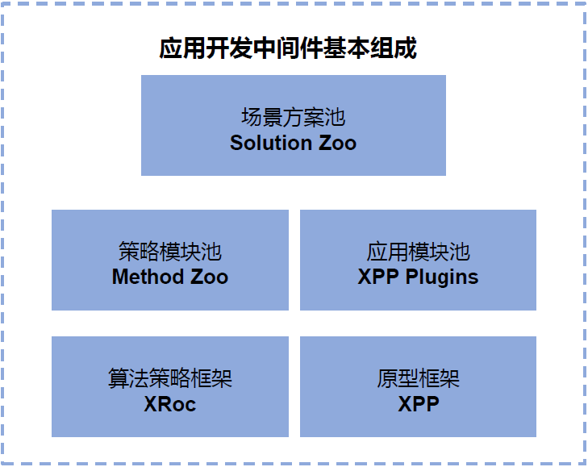

地平线AI芯片¶
X2是地平线研发的第二代面向AIoT场景的AI加速芯片，在视觉领域可用于智能相机、智能门禁系统等多种场景。 BPU的架构如下图：

X2芯片主要包含VIO（视频输入处理单元）、BPU（CNN加速单元）、BIF（通过spi等对外传输模块）; X2支持camera以mipi或者bt1120接口传递视频到VIO单元，从VIO可以获得一帧帧NV12格式的图片; 从VIO获取的图片输入BPU单元，配合不同的基于地平线工具链编译的模型可以得到对应的智能结果，如人脸检测框、人脸特征值等; 通常可通过BIF模块或者网口（如果存在的话）将智能帧结果传输出去。
AI应用中间件¶
地平线AI应用中间件, 是基于地平线AI芯片, 提供的高性能AI应用快速开发框架。基于AI应用开发中间件，您可以快速集成算法模型，开发出适应实际使用场景的AI应用。 AI应用中间件它有如下特点：
模块化设计，帮助用户通过简单配置即实现定制化需求开发。
提供典型场景应用案例，帮助用户快速上手AI应用开发，加速多场景AI业务的部署及落地。
成熟的产品级方案，已在面板机、IPC的多个项目成功应用。
完全开放&省时&省力。
中间件框架¶
地平线AI中间件框架如下图所示，算法策略框架XStream-framework和应用开发原型框架XProto-framework作为基础框架; Methods, XProto Plugins是地平线积累的算法策略以及应用模块池。Solutions是基于method，plugin的解决方案池。提供给客户参考及复用。

XStream Framework¶
该框架可以通过JSON配置构建workflow，workflow是一个有向拓扑图，图中每个节点（Node）管理了一个或多个同类型method的实例;
在XStream中method表示一种能力，通常是某类模型能力（人脸检测、人脸Pose等）或者算法策略（过滤策略、融合策略、优选策略等）;
将一组能力串联在一起就构成了一个workflow，workflow表示一个范式，比如人脸检测、跟踪、属性（pose、blur等）以及优选等能力级联起来可以构建一个人脸抓拍范式；
除此之外XStream-Framework定义了一套面向workflow的sdk C++通用接口，通过设置不同的配置文件同一套接口可以运行不同的workflow。
XProto Framework¶
XProto(X2 prototype platform) 主要为了解耦合输入VIO与智能处理单元（通常需要BPU处理）、以及输出模块（通过BIF传输等）。
XProto实现了一个松耦合的消息订阅与分发机制，输入、智能处理、输出等模块被抽象成一个个插件单元，每个插件可以通过总线订阅感兴趣的消息，同时也可以把合法的消息通过总线分发出去。
该solution定义的插件及消息类型如下：

Methods¶
Methods是地平线AI应用中间件提供的, 基于XStream Framework开发的智能策略Method池。 例如CNNMethod, FasterRCNNMethod, MotMethod。
Plugins¶
Plugins是基于XProto framework的原型组件池。
例如: SmartPlugin:基于XStream通用sdk接口开发的通用智能化sdk运行框架。
VioPlugin负责获取、转换图像数据并控制图像数据获取速率，并将图像数据或丢帧数据推送给消息总线。
Solutions¶
Solutions中提供应对不同场景的AI Solution, 比如人脸方案，人体方案, 车辆行人结构化方案等。这些方案是集成特定method, 加载运行特定模型完成的solution方案。
工程组织¶
目录结构¶
├── build.sh
├── CMakeLists.txt
├── deploy.sh
├── deps
│ ├── bpu_predict
│ ├── gtest
│ ├── hobot
│ ├── hobotlog
│ ├── ipc_tracking
│ ├── jsoncpp
│ ├── libjpeg-turbo
│ ├── libyuv
│ ├── live555
│ ├── opencv
│ ├── openssl
│ ├── param_calibration
│ ├── protobuf
│ ├── road_model
│ ├── roadside_perception
│ ├── uWS
│ ├── vehicle_behavior
│ ├── vehicle_road_relation
│ ├── x2_prebuilt
│ ├── x3_prebuilt
│ ├── xwarehouse
│ └── zlib
├── doc
│ └── release_note
├── models
├── python_api
│ ├── xproto
│ └── xstream
├── README.md
├── run.sh
├── source
│ ├── common
│ │ ├── README.md
│ │ ├── viowrapper
│ │ ├── xproto
│ │ │ ├── framework
│ │ │ ├── msgtype
│ │ │ ├── plugins
│ │ │ └── python_api
│ │ └── xstream
│ │ ├── framework
│ │ ├── imagetools
│ │ ├── methods
│ │ ├── python_api
│ │ ├── tutorials
│ │ └── vision_type
│ └── solution_zoo
│ ├── body
│ ├── face
│ ├── face_body_multisource
│ ├── vehicle
│ └── xstream
│ └── methods
deps (二进制形式)¶
bpu_predict：地平线bpu预测库;
gtest：第三方开源库，google test框架;
hobot：另一种基于数据流的编程框架hobotsdk;
hobotlog：地平线提供的日志系统，支持不同的优先级控制等特性;
ipc_tracking:基于IOU的多目标跟踪（MOT）策略库;
jsoncpp：第三方开源库，用于json解析;
libjpeg-turbo：第三方开源库，用于jpeg格式图像处理;
libyuv：第三方开源库，用于yuv格式图像处理;
opencv： 第三方开源库，主要用于计算机视觉处理;
openssl： 第三方开源库，用于web通信的ssl库;
param_calibration： 车路协同标定参数;
protobuf： 第三方开源库，多平台或者多模块间消息交互协议;
roadside_perception：车路协同目标定位sdk;
uWS：第三方开源库，用于web socket通信;
vehicle_behavior：车路协同，车路行为分析模块;
vehicle_road_relation：车路协同，车路速度分析模块;
x2_prebuilt：x2平台底层系统库或者hbrt基础库等;
x3_prebuilt：x3平台底层系统库或者hbrt基础库等;
xwarehouse：人脸比对，底库管理模块;
source (源代码形式)¶
xproto_framework: 消息订阅与分发的编程框架，每个基础组件以插件（plugin）的形式管理;
xproto_msgtype: 定义了xproto基础消息类型;
xproto_plugins: 基于XProto框架开发、沉淀的一系列基础组件，如VIO处理模块（VioPlugin）、智能处理模块(SmartPlugin)等， 基础组件以插件的形式管理;
xstream-framework: 一套基于数据流的编程框架;
xstream-imagetools: XStream提供的Image处理工具;
xstream-methods: 基于xstream-framework开发、沉淀的模型处理或者算法策略模块;
xstream-vision_type: vision type是AI视觉方案常用数据结构定义，如BBox， landmark、PyramidImage;
solutions: 基于地平线中间件构建的不同场景（如人脸抓拍识别、车辆视频结构化等）的解决方案池。;
solution_example: solution开发的样例;
solution_face：人脸抓拍识别解决方案案例;
solution_body：人体骨骼检测解决方案案例;
solution_vehicle：车辆相关解决方案案例;
doc (html格式文档)¶
doc/html/index.html html格式文档入口,请用浏览器打开。
models (模型)¶
faceMultitask: source/solution/face所用到的模型: 人脸多任务模型,可实现人脸检测,人脸抓拍,人脸识别等。
personMultitask: source/solution/body所用到的模型: 人体多任务模型。
vehicleSolutionModels: source/solution/vehicle所用到的模型: 车辆相关模型。
README.md (Markdown格式README文档)¶
工程简要介绍README文档
build.sh (bash shell脚本文件)¶
执行 sh build.sh x2 或者 sh build.sh x3, 可以编译整个开发环境。
如果没有权限，请使用chmod +x ./build.sh赋予执行权限。
build.sh 默认使用bash执行，如果您的环境中bash不是默认shell, 请使用
sudo bash build.sh执行脚本。
CMakeLists.txt (cmake文件)¶
整个工程使用cmake编译，请安装
cmake 3.15+以上版本。build.sh中会调用cmake根据CMakeLists.txt执行编译。
开发准备¶
安装BPU交叉编译工具链，地平线X2J2芯片的交叉编译工具链是gcc-linaro-6.5.0-2018.12-x86_64_aarch64-linux-gnu, 编译前请工具链安装到
/opt/目录安装
cmake 2.8+以上版本。如果需要更新升级交叉编译工具链，请修改根目录CMakeLists.txt中配置如下：
set(CMAKE_C_COMPILER /opt/gcc-linaro-6.5.0-2018.12-x86_64_aarch64-linux-gnu/bin/aarch64-linux-gnu-gcc)set(CMAKE_CXX_COMPILER /opt/gcc-linaro-6.5.0-2018.12-x86_64_aarch64-linux-gnu/bin/aarch64-linux-gnu-g++)
开发 solution¶
适配vio¶
不同的终端设备可能会有不同的输入接口(mipi、bt1120)、不同的cam配置（单目、双目），以及不同的应用场景(实时视频流或者回灌模式)等，因此在构建solution之前需要先适配vio配置;
vio配置参数详解见vioplugin;
如果当前vioplugin不能满足终端需求，请及时联系地平线人员提供支持。
基于XStream-framework集成模型、开发算法策略模块等¶
XStream-framework提供了面向数据流的编程框架，基于该框架可以将多个业务模块串联起来构建一个workflow，模型集成或者算法策略模块以method的形式加入workflow中。
XStream-tutorialssource/common/xstream/tutorials提供了Step-by-step 创建xstream SDK, 创建多线程实例, Method属性支持。workflow执行流控制几个步骤。读者可从入门到精通的方式，掌握基于xstream framework的method开发。
Solutionssource/solutions包括几个methodfasterrcnnmethod, cnnmethod, filtermethod, gradingmethod, mergemethod, plate_vote_method, snapshotmethod, valuemergemethod等， 基于这些method
给出人脸抓拍识别解决方案source/solutions/face, 人体骨骼检测解决方案source/solutions/body, 车辆新人检测解决方案source/solutions/vehicle。
Fasterrcnnmethod、CNNMethod对模型集成做了部分抽象，建议用户基于此完成自己的模型适配或者集成新的模型;
基于SmartPlugin构建Solution¶
Smartplugin为该工程构建solution的入口，包含main程序(smartplugin/sample/smart_main.cpp);
默认实现是基于XStream-framework面向workflow的通用接口实现了单workflow的AI应用运行框架;大部分情况下，用户可基于该实现通过简单修改完成自己的solution构建，构建过程详细参考smartplugin;
如果默认构建不满足需求，用户还可以自定义plugin实现，自定义plugin的方式详见xproto;
编译¶
在完成开发准备的前提下，可以直接运行build.sh，完成整个开发包的编译。
如果您开发了自己的method, 或者其他solution方案，请在代码所在路径的CMakeLists.txt中增加对应的编译命令。
部署¶
在编译完成后，执行deploy.sh, 会在根目录下生成deploy目录。
请将deploy目录完整拷贝到X2板子上。
运行¶
deploy中有run.sh，运行这个脚本，可以运行软件包中默认提供的几个solution方案。
usage: sh run.sh [ face | body | vehicle ]如果您自己开发了solution，可以参考run.sh设置启动脚本。
关键点: 将deploy/lib加入到LD_LIBRARY_PATH， 设置
export LD_LIBRARY_PATH=./lib/设置如./configs/vio_config.json.96board ./body_solution/configs/body_solution.json -i这样的运行参数,其中vio_config.json.96board是96board的配置， ./body_solution/configs/body_solution.json是solution的配置。